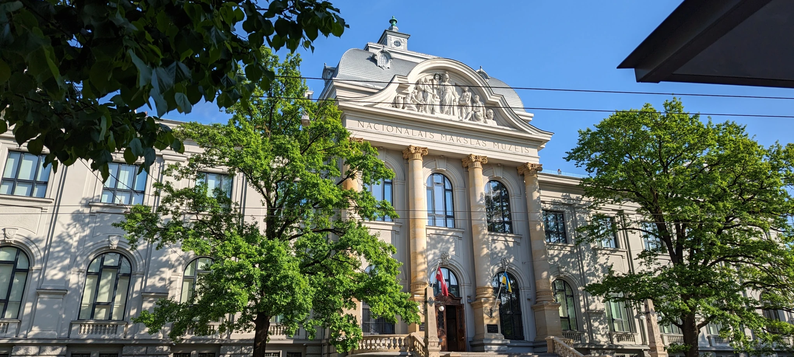

The website is meant to explore the various ways that I, Kristaps Langmanis, use to travel or could travel from home to the University of Latvia. The Sections are divided according to the transportation type:
- Bicycle: during spring and summer I like to ride with a bicycle because it not only offers a convenient and eco-friendly way of commuting but also allows me to enjoy the scenery and experience a more active lifestyle.
- Public transport: my usual type of transportation when I need to get somewhere because in Latvia it is quite reliable and reaches the destination in a timely manner.
- On foot: for shorter distances I like to travel in a brisk walk because it allows me to lightly exercise and enjoy the scenery similarly as I would riding a bicycle.
Unfortunately, I have not yet walked the entire distance from home to the University of Latvia, however, I regularly walk from my workplace at Elizabete Street to the building of the University of Latvia at Rainis' Boulevard 19 and the building of the Faculty of History and Philosophy at Aspazijas bulvāris 5.
Below this text, you can find a photo of the Latvian National Museum of Art. I often need to walk from the University of Latvia to my workplace, so I also pass by the museum. When I wait for public transport or pass by the building using a bicycle, I like to observe it a lot.
